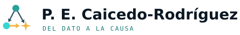

Manual de marca
Del dato a la causa
Idea
La marca cuenta un recorrido: los datos se extraen, se conectan como grafo y terminan en una causa. El isotipo es el triángulo causal clásico: el confusor \(Z\) (turquesa profundo) apunta al tratamiento \(X\) (turquesa) y al desenlace \(Y\), y la flecha dorada \(X \to Y\) es el efecto que se quiere estimar. El desenlace es la chispa de cuatro puntas del yunque de BioForja. La paleta (tinta, turquesa y dorado) y las fuentes DejaVu son las de las diapositivas de BioForja.
Logotipos


Logo de BioForja, del que sale la chispa del isotipo:
El motivo de fondo (red-causal.svg) va siempre sobre tinta, a la derecha y con un velo hacia el texto.
Paleta
Cada acento tiene un significado. Sobre fondo claro se usa la variante oscura de cada uno.
Tinta#0B1824
Superficie · texto#123047
Turquesa · dato#38D6CF / #1A7C78
Turquesa profundo · grafo#2AA09B / #1D6468
Dorado · causa#F2B544 / #97650A
Acero · tenue#315064
Niebla · filetes#B8CAD6
Papel#F7FAFC
Coral · aviso#FF7A5C / #C4432C
La firma visual es el filete degradado turquesa → turquesa profundo → dorado: bajo los títulos de sección, al pie de cada diapositiva y bajo la banda de título.
Tipografía
DejaVu Sans negrita · títulos
DejaVu Sans · texto corrido, con cursiva real
DejaVu Sans Mono · código, rótulos y pies
Tienen la licencia libre de Bitstream Vera / DejaVu. Los .ttf están en recursos/marca/fuentes/ para el PDF y beamer; los temas HTML las llevan incrustadas (recortadas a latín, griego y símbolos) y usan las del sistema si ya están instaladas.
Archivos
| Archivo | Para |
|---|---|
caicedo-sitio.scss |
sitio Quarto (_quarto.yml) |
caicedo-documento.scss |
documentos HTML, solos o encima del sitio |
caicedo-diapositivas.scss |
diapositivas revealjs |
caicedo-documento.sty |
documentos PDF (scrartcl + LuaLaTeX) |
caicedo-diapositivas.sty |
diapositivas beamer, gemelas de revealjs |
caicedo-claro.theme, caicedo-oscuro.theme |
resaltado de código claro y oscuro |
caicedo.lua |
clases de color {.dato} {.grafo} {.causa} {.alert} en PDF y beamer |
Clases de color
Escribe [texto]{.dato}, [texto]{.grafo}, [texto]{.causa} o [texto]{.alert}: dato, grafo, causa.